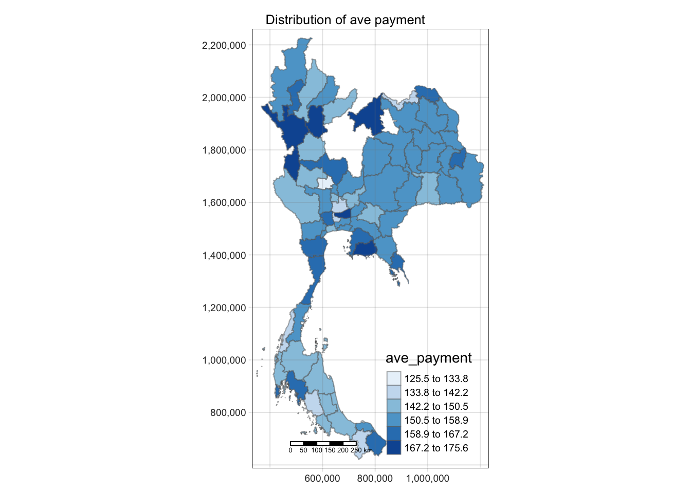
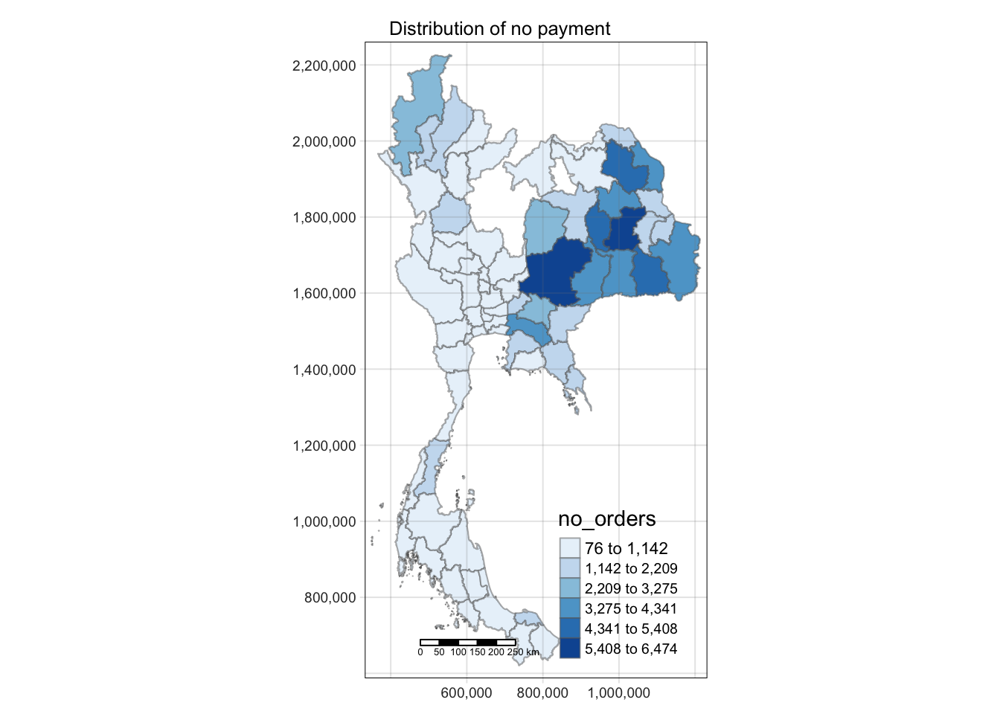
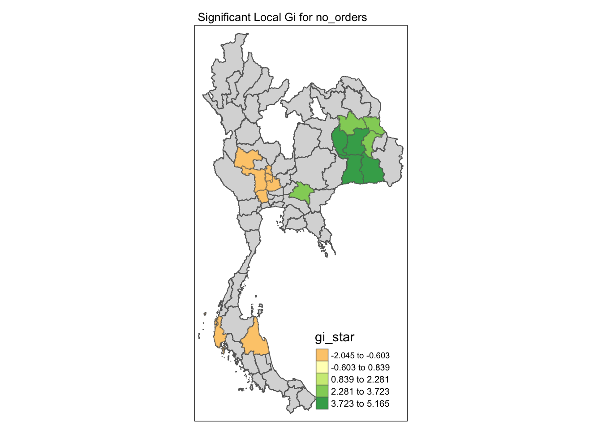
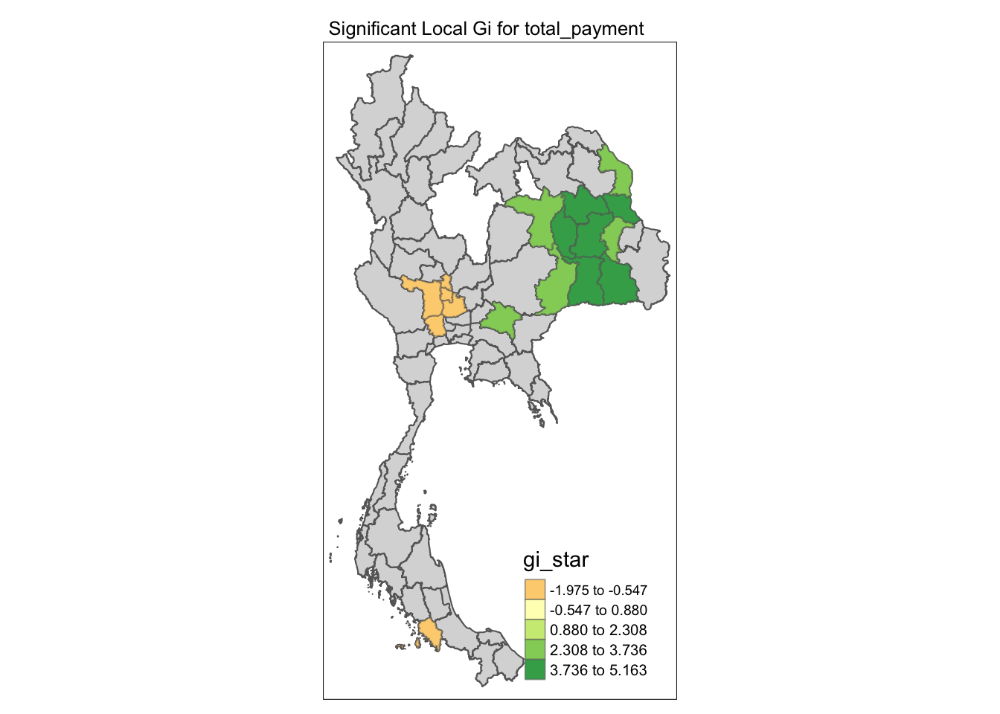
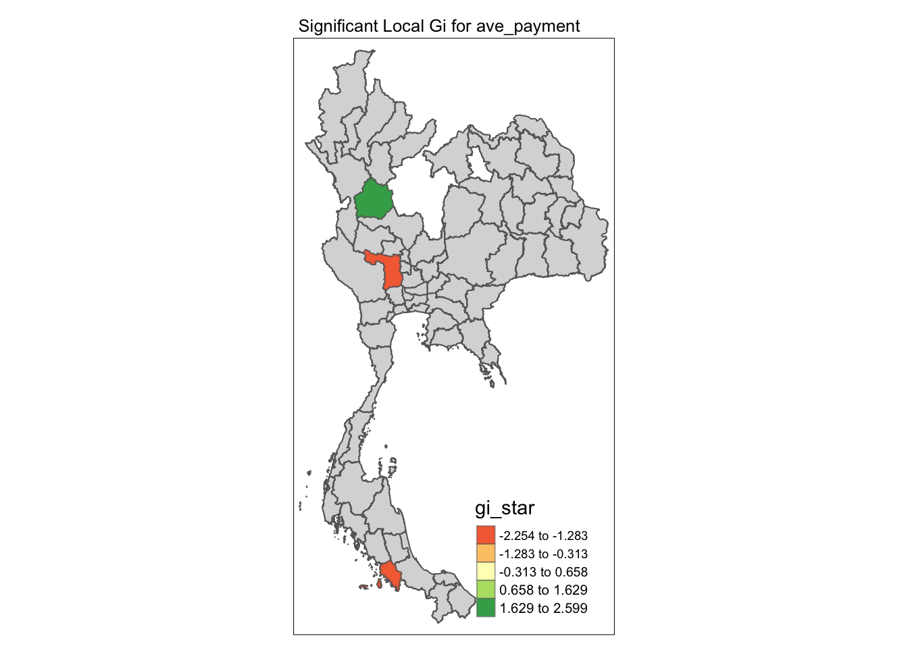
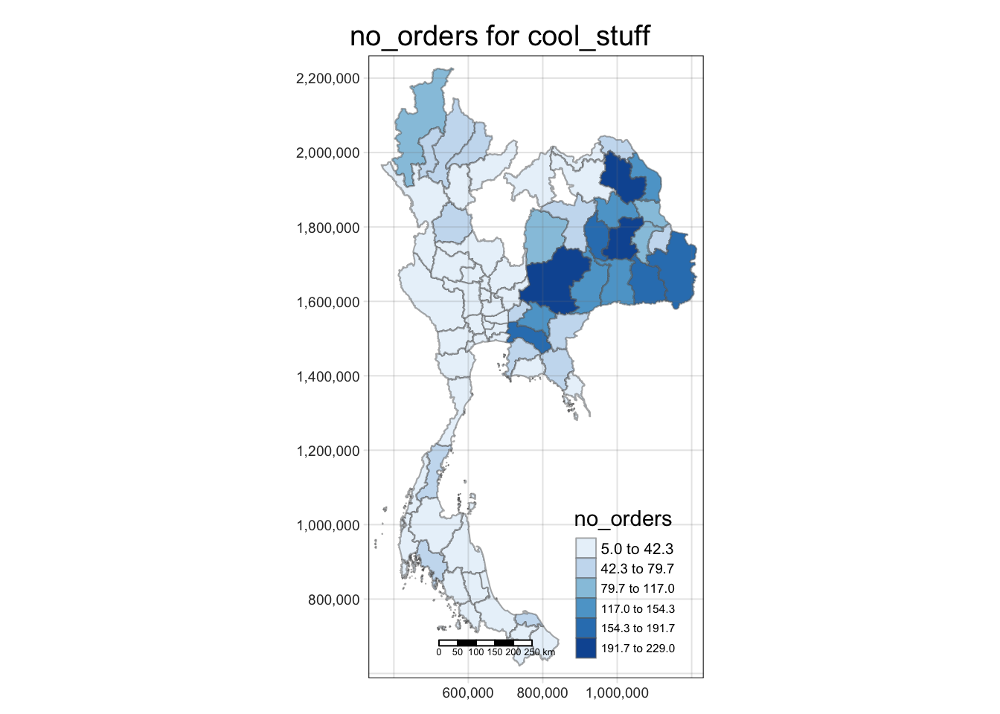
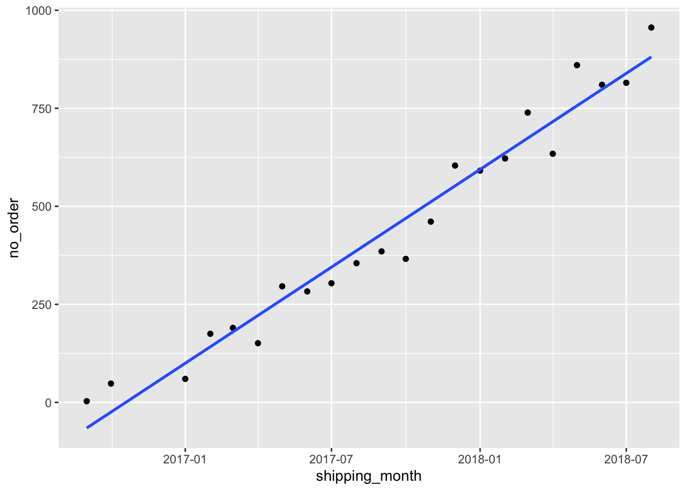
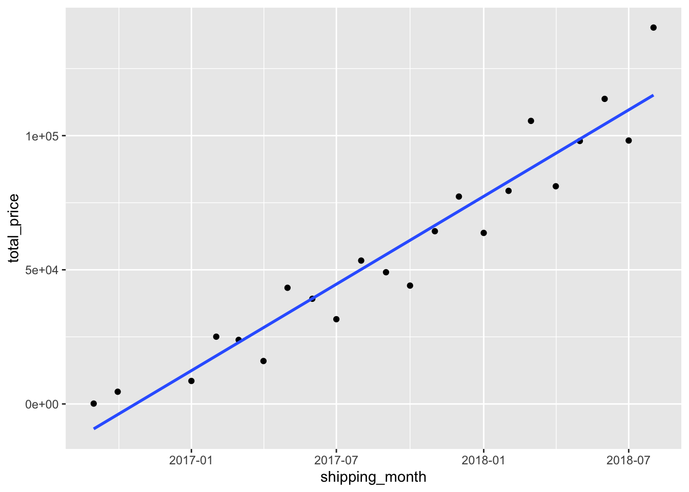

pacman::p_load(sf, tmap, tidyverse, sfdep, DT, patchwork, ggplot2)Approach
1 Installing packages
2 Data Wrangling
2.1 Geospatial Data
To create map plots, we require shape files of Thailand to create the boundaries of each state for map plotting. We used the dataset from HDX accessible here. As we wanted to analyse patterns across states, ADM1 is used.
TH_ADM1<-st_read(dsn="data/geospatial/shapefiles",
layer="tha_admbnda_adm1_rtsd_20220121") |>
st_transform(24047) |> #Since the coordinate reference system is not set to the CRS that thailand uses, we use st_transform to change it to Thailans CRS (24047).
arrange(ADM1_EN) |>
select(ADM1_EN, geometry)Reading layer `tha_admbnda_adm1_rtsd_20220121' from data source
`/Users/pengyouyun/youyunpeng/lomocase/approach/data/geospatial/shapefiles'
using driver `ESRI Shapefile'
Simple feature collection with 77 features and 16 fields
Geometry type: MULTIPOLYGON
Dimension: XY
Bounding box: xmin: 97.34336 ymin: 5.613038 xmax: 105.637 ymax: 20.46507
Geodetic CRS: WGS 84A check for duplicates is done below:
TH_ADM1$ADM1_EN[duplicated(TH_ADM1$ADM1_EN)==TRUE] #check for duplicatescharacter(0)Since there are no duplicates, we can continue with our analysis!
2.2 Aspatial Data
The necessary datasets we are interested in are read into R’s environment below:
consumer_location<-read.csv("data/001_lomo_customers_dataset.csv")
products<-read_csv("data/004_lomo_products_dataset.csv")Rows: 32340 Columns: 9
── Column specification ────────────────────────────────────────────────────────
Delimiter: ","
chr (2): product_id, product_category_name
dbl (7): product_name_lenght, product_description_lenght, product_photos_qty...
ℹ Use `spec()` to retrieve the full column specification for this data.
ℹ Specify the column types or set `show_col_types = FALSE` to quiet this message.products_category<-read_csv("data/005_lomo_product_category_name_translation.csv")Rows: 71 Columns: 2
── Column specification ────────────────────────────────────────────────────────
Delimiter: ","
chr (2): product_category_name_portugese, product_category_name_english
ℹ Use `spec()` to retrieve the full column specification for this data.
ℹ Specify the column types or set `show_col_types = FALSE` to quiet this message.consumer_orders<-read.csv("data/006_lomo_orders_dataset.csv")
order_items<-read_csv("data/007_lomo_order_items_dataset.csv")Rows: 112650 Columns: 7
── Column specification ────────────────────────────────────────────────────────
Delimiter: ","
chr (4): order_id, product_id, seller_id, shipping_limit_date
dbl (3): order_item_id, price, freight_value
ℹ Use `spec()` to retrieve the full column specification for this data.
ℹ Specify the column types or set `show_col_types = FALSE` to quiet this message.payment<-read_csv("data/008_lomo_order_payments_dataset.csv")Rows: 103886 Columns: 5
── Column specification ────────────────────────────────────────────────────────
Delimiter: ","
chr (2): order_id, payment_type
dbl (3): payment_sequential, payment_installments, payment_value
ℹ Use `spec()` to retrieve the full column specification for this data.
ℹ Specify the column types or set `show_col_types = FALSE` to quiet this message.reviews<-read_csv("data/009_lomo_order_reviews_dataset.csv")Rows: 100000 Columns: 7
── Column specification ────────────────────────────────────────────────────────
Delimiter: ","
chr (6): review_id, order_id, review_comment_title, review_comment_message, ...
dbl (1): review_score
ℹ Use `spec()` to retrieve the full column specification for this data.
ℹ Specify the column types or set `show_col_types = FALSE` to quiet this message.First we want to create a dataframe that aggregates consumer orders and payment amount on a state level
consumer_orders_payment<-consumer_orders |>
inner_join(payment) #joining order and payment infoJoining with `by = join_by(order_id)`Warning in inner_join(consumer_orders, payment): Each row in `x` is expected to match at most 1 row in `y`.
ℹ Row 1 of `x` matches multiple rows.
ℹ If multiple matches are expected, set `multiple = "all"` to silence this
warning.To make sense of the data on a spatial level, we conduct another join with consumer_location to get the location of each order.
consumer_orders_location<-consumer_orders_payment |>
inner_join(consumer_location, by="customer_id") |>
mutate(customer_state=as.factor(customer_state)) #create factor object for ease of plotting graphs
summary(consumer_orders_location) order_id customer_id order_status
Length:103886 Length:103886 Length:103886
Class :character Class :character Class :character
Mode :character Mode :character Mode :character
order_purchase_timestamp order_approved_at order_delivered_carrier_date
Length:103886 Length:103886 Length:103886
Class :character Class :character Class :character
Mode :character Mode :character Mode :character
order_delivered_customer_date order_estimated_delivery_date payment_sequential
Length:103886 Length:103886 Min. : 1.000
Class :character Class :character 1st Qu.: 1.000
Mode :character Mode :character Median : 1.000
Mean : 1.093
3rd Qu.: 1.000
Max. :29.000
payment_type payment_installments payment_value customer_unique_id
Length:103886 Min. : 0.000 Min. : 0.00 Length:103886
Class :character 1st Qu.: 1.000 1st Qu.: 56.79 Class :character
Mode :character Median : 1.000 Median : 100.00 Mode :character
Mean : 2.853 Mean : 154.10
3rd Qu.: 4.000 3rd Qu.: 171.84
Max. :24.000 Max. :13664.08
customer_zip_code_prefix customer_city customer_state
Length:103886 Length:103886 Roi Et : 6474
Class :character Class :character Nakhon Ratchasima: 5818
Mode :character Mode :character Sakon Nakhon : 5323
Si Sa Ket : 4997
Maha Sarakham : 4375
Ubon Ratchathani : 4223
(Other) :72676 We are interested to see, at the state level, what are number of orders, average payment and total payment statistics. Using the summarise function, we create a new dataframe for analysis:
count_location_state<-consumer_orders_location |>
group_by(customer_state) |>
summarise(no_orders=n(), ave_payment=mean(payment_value), total_payment=sum(payment_value)) |>
rename(ADM1_EN=customer_state)
datatable(count_location_state)Our second aspatial dataframe focuses on product specific data. We first obtain the translated product categories by conducting a join betweem “products” and “product_category” we reassign “products” to this data frame.
products<-products |>
inner_join(products_category,by=c("product_category_name"="product_category_name_portugese")) |>
select(product_id, product_category_name_english) |>
mutate(product_category_name_english=as.factor(product_category_name_english))Next, we map review and product information to the order dataset
product_order_reviews<-order_items |>
left_join(products, by="product_id") |>
left_join(reviews, by="order_id")Warning in left_join(left_join(order_items, products, by = "product_id"), : Each row in `x` is expected to match at most 1 row in `y`.
ℹ Row 96 of `x` matches multiple rows.
ℹ If multiple matches are expected, set `multiple = "all"` to silence this
warning.Using summarise, we group the dataset via product category and obtain key statistics from the data (no_orders, ave_review, ave_price, total_price).
product_order_reviews_summary<-product_order_reviews |>
group_by(product_category_name_english) |>
summarise(no_orders=n(), ave_review=mean(review_score), ave_price=mean(price), total_price=sum(price)) |>
arrange(desc(total_price))
datatable(product_order_reviews_summary)From the data tables generated, we are able to sort the product categories, and quickly see at a glance, which product cateories had the highest order count, revenue generated or highest reviews.
We can include the location dimension by conducting a join with “consumer_orders_location” previously created
product_order_reviews_location<-product_order_reviews |>
left_join(consumer_orders_location, by="order_id")Warning in left_join(product_order_reviews, consumer_orders_location, by = "order_id"): Each row in `x` is expected to match at most 1 row in `y`.
ℹ Row 39 of `x` matches multiple rows.
ℹ If multiple matches are expected, set `multiple = "all"` to silence this
warning.3 Exploratory Data analysis
3.1 Aggregate Indicators
In this section we aim to differentiate the performance of different states. To answer the question of which states should be pioritised when coming up with a marketing strategy.
Currently, we have 3 indicators: - Total Payment - Average Payment - Number of orders
Lets create 3 chloropleth maps corresponding to the different indicators to investigate the spatial patterns.
count_location_state_geometry<-count_location_state |>
inner_join(TH_ADM1, by="ADM1_EN") |>
st_as_sf()
tmap_mode("plot")tmap mode set to plottingplot_total_payment<-tm_shape(count_location_state_geometry |>
select(ADM1_EN, total_payment, geometry))+
tm_fill("total_payment",
n=6,
style="equal",
palette="Blues")+
tm_borders(alpha = 0.5) +
tm_layout(main.title=paste("Distribution of total payment"),
main.title.position="center",
main.title.size = 0.8,
frame=TRUE)+
tm_scale_bar()+
tm_grid(alpha=0.2)
plot_ave_payment<-tm_shape(count_location_state_geometry |>
select(ADM1_EN, ave_payment, geometry))+
tm_fill("ave_payment",
n=6,
style="equal",
palette="Blues")+
tm_borders(alpha = 0.5) +
tm_layout(main.title=paste("Distribution of ave payment"),
main.title.position="center",
main.title.size = 0.8,
frame=TRUE)+
tm_scale_bar()+
tm_grid(alpha=0.2)
plot_no_orders<-tm_shape(count_location_state_geometry |>
select(ADM1_EN, no_orders, geometry))+
tm_fill("no_orders",
n=6,
style="equal",
palette="Blues")+
tm_borders(alpha = 0.5) +
tm_layout(main.title=paste("Distribution of no payment"),
main.title.position="center",
main.title.size = 0.8,
frame=TRUE)+
tm_scale_bar()+
tm_grid(alpha=0.2)
plot_ave_paymentLegend labels were too wide. The labels have been resized to 0.61, 0.61, 0.61, 0.61, 0.61, 0.61. Increase legend.width (argument of tm_layout) to make the legend wider and therefore the labels larger.
plot_total_paymentLegend labels were too wide. The labels have been resized to 0.48, 0.45, 0.45, 0.45, 0.45, 0.41. Increase legend.width (argument of tm_layout) to make the legend wider and therefore the labels larger.plot_no_ordersSome legend labels were too wide. These labels have been resized to 0.61, 0.61, 0.61, 0.61, 0.61. Increase legend.width (argument of tm_layout) to make the legend wider and therefore the labels larger.
Given that the aggregated data would have more data points, we can conduct some statistical analysis on the possibility of clustering or dispersion of locations with similar results.
To create a LISA map, we first have to create the HCSA object below. “Phuket” is excluded from our analysis as it does not have neighbours and can cause errors in our execution
wm_q<-filter(count_location_state_geometry, ADM1_EN!="Phuket") |>
mutate(nb=st_contiguity(geometry),
wt=st_inverse_distance(nb,
geometry,
scale=1,
alpha=1)) |>
select(ADM1_EN, no_orders, geometry, nb, wt)! Polygon provided. Using point on surface.sum(is.na(wm_q$no_orders))[1] 0wm_q$nbNeighbour list object:
Number of regions: 68
Number of nonzero links: 298
Percentage nonzero weights: 6.444637
Average number of links: 4.382353 HCSA<- wm_q |>
mutate(local_Gi=local_gstar_perm(
no_orders, nb, wt, nsim=99),
.before=1) |> #code chunk to compute Gi star value
unnest(local_Gi)We can condense the HCSA and wm_q to one function below. We repeat the same for the other 2 variables (total_payment) and (ave_payment)
HCSA_no_orders<- filter(count_location_state_geometry, ADM1_EN!="Phuket") |>
mutate(nb=st_contiguity(geometry),
wt=st_inverse_distance(nb,
geometry,
scale=1,
alpha=1)) |>
select(ADM1_EN, no_orders, geometry, nb, wt) |>
mutate(local_Gi=local_gstar_perm(
no_orders, nb, wt, nsim=99),
.before=1) |> #code chunk to compute Gi star value
unnest(local_Gi)! Polygon provided. Using point on surface.HCSA_total_payment<- filter(count_location_state_geometry, ADM1_EN!="Phuket") |>
mutate(nb=st_contiguity(geometry),
wt=st_inverse_distance(nb,
geometry,
scale=1,
alpha=1)) |>
select(ADM1_EN, total_payment, geometry, nb, wt) |>
mutate(local_Gi=local_gstar_perm(
total_payment, nb, wt, nsim=99),
.before=1) |> #code chunk to compute Gi star value
unnest(local_Gi)! Polygon provided. Using point on surface.HCSA_ave_payment<- filter(count_location_state_geometry, ADM1_EN!="Phuket") |>
mutate(nb=st_contiguity(geometry),
wt=st_inverse_distance(nb,
geometry,
scale=1,
alpha=1)) |>
select(ADM1_EN, ave_payment, geometry, nb, wt) |>
mutate(local_Gi=local_gstar_perm(
ave_payment, nb, wt, nsim=99),
.before=1) |> #code chunk to compute Gi star value
unnest(local_Gi)! Polygon provided. Using point on surface.We can create the LISA plots below:
HCSA_no_orders_plot <-
tm_shape(HCSA_no_orders) +
tm_polygons() +
tm_shape(HCSA_no_orders %>% filter(p_sim <0.05)) +
tm_fill("gi_star",
style="equal",
n=5) +
tm_borders(alpha = 0.5) +
tm_layout(main.title = paste("Significant Local Gi for no_orders"),
main.title.size = 0.8)
HCSA_total_payment_plot <-
tm_shape(HCSA_total_payment) +
tm_polygons() +
tm_shape(HCSA_total_payment %>% filter(p_sim <0.05)) +
tm_fill("gi_star",
style="equal",
n=5) +
tm_borders(alpha = 0.5) +
tm_layout(main.title = paste("Significant Local Gi for total_payment"),
main.title.size = 0.8)
HCSA_ave_payment_plot <-
tm_shape(HCSA_ave_payment) +
tm_polygons() +
tm_shape(HCSA_ave_payment %>% filter(p_sim <0.05)) +
tm_fill("gi_star",
style="equal",
n=5) +
tm_borders(alpha = 0.5) +
tm_layout(main.title = paste("Significant Local Gi for ave_payment"),
main.title.size = 0.8)
HCSA_no_orders_plotVariable(s) "gi_star" contains positive and negative values, so midpoint is set to 0. Set midpoint = NA to show the full spectrum of the color palette.Legend labels were too wide. The labels have been resized to 0.58, 0.60, 0.63, 0.63, 0.63. Increase legend.width (argument of tm_layout) to make the legend wider and therefore the labels larger.
HCSA_total_payment_plotVariable(s) "gi_star" contains positive and negative values, so midpoint is set to 0. Set midpoint = NA to show the full spectrum of the color palette.
Legend labels were too wide. The labels have been resized to 0.58, 0.60, 0.63, 0.63, 0.63. Increase legend.width (argument of tm_layout) to make the legend wider and therefore the labels larger.
HCSA_ave_payment_plotVariable(s) "gi_star" contains positive and negative values, so midpoint is set to 0. Set midpoint = NA to show the full spectrum of the color palette.Legend labels were too wide. The labels have been resized to 0.58, 0.58, 0.60, 0.63, 0.63. Increase legend.width (argument of tm_layout) to make the legend wider and therefore the labels larger.
3.1.1 Observations and conclusions:
3.2 Product specific indicators
We can combine our geospatial and product information to also analyse product specific performance across different states in thailand.
With the dataset in place, we can now create a shiny app to loop through the different products and indicators that the user wants to focus on. We first try to create a prototype with the inputs “cool_stuff” as the product category and “no_orders” as the indicator
product_order_reviews_location<-product_order_reviews |>
left_join(consumer_orders_location, by="order_id") |>
group_by(product_category_name_english, customer_state) |>
summarise(no_orders=n(), total_price=sum(price), ave_price=mean(price)) |>
rename(ADM1_EN=customer_state) |>
right_join(TH_ADM1, by="ADM1_EN") |>
st_as_sf()Warning in left_join(product_order_reviews, consumer_orders_location, by = "order_id"): Each row in `x` is expected to match at most 1 row in `y`.
ℹ Row 39 of `x` matches multiple rows.
ℹ If multiple matches are expected, set `multiple = "all"` to silence this
warning.`summarise()` has grouped output by 'product_category_name_english'. You can
override using the `.groups` argument.i="cool_stuff"
j="no_orders"
# create tmap plot
tmap_mode("plot")tmap mode set to plottingtm_shape(product_order_reviews_location |>
filter(product_category_name_english==i) |>
select(ADM1_EN, j, geometry))+
tm_fill(j,
n=6,
style="equal",
palette="Blues")+
tm_borders(alpha = 0.5) +
tm_layout(main.title=paste(j, "for", i),
main.title.position="center",
main.title.size=1.2,
legend.height=0.45,
legend.width = 0.35,
frame=TRUE)+
tm_scale_bar()+
tm_grid(alpha=0.2)Warning: Using an external vector in selections was deprecated in tidyselect 1.1.0.
ℹ Please use `all_of()` or `any_of()` instead.
# Was:
data %>% select(j)
# Now:
data %>% select(all_of(j))
See <https://tidyselect.r-lib.org/reference/faq-external-vector.html>.Legend labels were too wide. The labels have been resized to 0.64, 0.58, 0.53, 0.48, 0.48, 0.48. Increase legend.width (argument of tm_layout) to make the legend wider and therefore the labels larger.
As we can see in the output, it creates a density map as expected. We can extend our understanding to create a Shiny app so as to loop this analysis across all other products and indicators.
A simple Shiny App can be created:
library(shiny)
product_list<-unique(product_order_reviews_location$product_category_name_english)
# Define the UI
ui <- fluidPage(
selectInput(
"indicator",
label="pick an indicator",
choices=c("no_orders", "ave_price","total_price"),
selected="no_orders",
multiple=FALSE
),
selectInput(
"product",
label="pick a product category",
choices=product_list,
selected="cool_stuff",
multiple=FALSE
),
# Create a tmap output element
tmapOutput("my_map"),
DT::dataTableOutput(outputId = "my_table")
)
# Define the server
server <- function(input, output) {
dataset<-reactive({
product_order_reviews_location |>
filter(product_category_name_english==input$product) |>
select(ADM1_EN, input$indicator, geometry)
})
# Render the tmap in the output element
output$my_map <- renderTmap({
# Create the tmap
tm_shape(shp=dataset())+
tm_fill(input$indicator,
style="quantile",
palette="Blues")
})
output$my_table<-DT::renderDataTable({
DT::datatable(data=dataset())
})
}
# Run the app
shinyApp(ui, server)3.3 Time-based analysis of product trends
Something else interesting could be to look into whether there has been decline or increase in product specific indicators over time, on the aggregate level.
Through this analysis, we aim to select the best performing products that are on the rise over the years, and to also sieve out the worst performing products.
Similar to the previous cases, we start with analysing an arbritary test scenario and extend our analysis to other cases/products.
i="health_beauty"
j="no_order"
specific_product_time<-product_order_reviews |>
mutate(shipping_limit_date=as.Date(shipping_limit_date, format = "%d/%m/%Y")) |>
mutate(shipping_month=as.Date(format(shipping_limit_date, "%Y-%m-01"))) |>
filter(product_category_name_english==i,
shipping_month!="2018-09-01") |> #remove due to incomplete dataset to represent sales of the month
select(price, product_category_name_english, shipping_month) |>
group_by(shipping_month) |>
summarise(no_order=n(), total_price=sum(price))With the information in place, we fit a linear model onto the data to see how the indicators (no_order, total_price) varies as time (shipping_month) changes.
We can plot the relationship using ggplot.
#fitting linear model and extracting slope of line
coef(lm(no_order~shipping_month, data=specific_product_time))["shipping_month"] |>
as.numeric()[1] 1.353922ggplot(specific_product_time,aes(x=shipping_month, y=no_order))+
geom_point()+
geom_smooth(method = "lm", se = FALSE)`geom_smooth()` using formula = 'y ~ x'
ggplot(specific_product_time,aes(x=shipping_month, y=total_price))+
geom_point()+
geom_smooth(method = "lm", se = FALSE)`geom_smooth()` using formula = 'y ~ x'
To generalise this analysis to all products, we can can create 2 functions to obtain the slopes for no_order and total price below, so as to compare across different products.
product_order_reviews# A tibble: 113,322 × 14
order…¹ order…² produ…³ selle…⁴ shipp…⁵ price freig…⁶ produ…⁷ revie…⁸ revie…⁹
<chr> <dbl> <chr> <chr> <chr> <dbl> <dbl> <fct> <chr> <dbl>
1 000102… 1 424473… 48436d… 19/09/… 58.9 13.3 cool_s… 97ca43… 5
2 00018f… 1 e5f2d5… dd7ddc… 03/05/… 240. 19.9 pet_sh… 7b07ba… 4
3 000229… 1 c77735… 5b5103… 18/01/… 199 17.9 furnit… 0c5b33… 5
4 00024a… 1 7634da… 9d7a1d… 15/08/… 13.0 12.8 perfum… f4028d… 4
5 00042b… 1 ac6c36… df5603… 13/02/… 200. 18.1 garden… 940144… 5
6 00048c… 1 ef92de… 6426d2… 23/05/… 21.9 12.7 housew… 5e4e50… 4
7 00054e… 1 8d4f2b… 7040e8… 14/12/… 19.9 11.8 teleph… 0381de… 4
8 000576… 1 557d85… 5996cd… 10/07/… 810 70.8 garden… f0733e… 5
9 0005a1… 1 310ae3… a416b6… 26/03/… 146. 11.6 health… 67b1ab… 1
10 0005f5… 1 4535b0… ba143b… 06/07/… 54.0 11.4 books_… 5c0b7e… 4
# … with 113,312 more rows, 4 more variables: review_comment_title <chr>,
# review_comment_message <chr>, review_creation_date <chr>,
# review_answer_timestamp <chr>, and abbreviated variable names ¹order_id,
# ²order_item_id, ³product_id, ⁴seller_id, ⁵shipping_limit_date,
# ⁶freight_value, ⁷product_category_name_english, ⁸review_id, ⁹review_scoredetermine_slope_no_order <- function(product) {
specific_product_time<-product_order_reviews |>
mutate(shipping_limit_date=as.Date(shipping_limit_date, format = "%d/%m/%Y")) |>
mutate(shipping_month=as.Date(format(shipping_limit_date, "%Y-%m-01"))) |>
filter(product_category_name_english==product,
shipping_month!="2018-09-01") |> #remove due to incomplete dataset to represent sales of the month
select(price, product_category_name_english, shipping_month) |>
group_by(shipping_month) |>
summarise(no_order=n(), total_price=sum(price))
slope<-coef(lm(no_order~shipping_month, data=specific_product_time))["shipping_month"] |>
as.numeric()
result <- ifelse(is.na(slope), 0, slope)
return(result)
}
determine_slope_total_price <- function(product) {
specific_product_time<-product_order_reviews |>
mutate(shipping_limit_date=as.Date(shipping_limit_date, format = "%d/%m/%Y")) |>
mutate(shipping_month=as.Date(format(shipping_limit_date, "%Y-%m-01"))) |>
filter(product_category_name_english==product,
shipping_month!="2018-09-01") |> #remove due to incomplete dataset to represent sales of the month
select(price, product_category_name_english, shipping_month) |>
group_by(shipping_month) |>
summarise(no_order=n(), total_price=sum(price))
slope<-coef(lm(total_price~shipping_month, data=specific_product_time))["shipping_month"] |>
as.numeric()
result <- ifelse(is.na(slope), 0, slope)
return(result)
}
determine_slope_no_order("fashion_children_clothes")[1] 0.001067827determine_slope_total_price("fashion_children_clothes")[1] -0.03939796Now, we can initialise an empty dataframe with all of the product names and loop this function through all products.
product_list<-unique(product_order_reviews_location$product_category_name_english) |> #previously created
na.omit()
df<-data.frame(product_list = character(0),
slope_no_order = character(0),
slope_total_price = character(0))
for (i in product_list){
slope_no_order=determine_slope_no_order(i)
slope_total_price=determine_slope_total_price(i)
new_row <- data.frame(product_list = i,
slope_no_order = slope_no_order,
slope_total_price = slope_total_price)
df <- rbind(df, new_row)
}
df product_list slope_no_order slope_total_price
1 agro_industry_and_commerce 3.810210e-02 12.18055138
2 air_conditioning 1.968002e-02 2.34530182
3 arts 4.920871e-02 2.01906145
4 arts_and_craftmanship 1.627698e-02 1.29199455
5 audio 3.947452e-02 7.02250167
6 auto 6.139787e-01 76.31539728
7 baby 4.016770e-01 59.47765041
8 bed_bath_table 1.234247e+00 110.71635691
9 books_general_interest 6.564175e-02 5.54040117
10 books_imported 1.120078e-02 0.99808960
11 books_technical 6.208447e-02 3.39205869
12 cds_dvds_musicals -1.114046e-02 -0.42621238
13 christmas_supplies 1.746559e-02 1.05068046
14 computers -2.176399e-02 -41.56012573
15 computers_accessories 9.528001e-01 93.73894422
16 consoles_games 7.494315e-02 7.12953978
17 construction_tools_construction 2.924484e-01 45.74871516
18 construction_tools_garden 3.767080e-02 3.29101331
19 construction_tools_lights 1.851720e-01 22.05558838
20 construction_tools_safety 4.813769e-02 8.86010694
21 construction_tools_tools 2.425829e-02 3.37817876
22 cool_stuff 1.741625e-01 29.73272008
23 cuisine 1.958413e-03 0.89656654
24 diapers_and_hygiene 5.917308e-03 0.15247126
25 drinks 8.154743e-02 5.09224890
26 dvds_blue_ray -8.840118e-04 -1.33179099
27 electronics 4.194712e-01 22.29376112
28 fashion_bags_accessories 1.641563e-01 14.48077947
29 fashion_children_clothes 1.067827e-03 -0.03939796
30 fashion_female_clothing 1.178389e-03 -0.13467730
31 fashion_male_clothing -1.583813e-03 -0.05544249
32 fashion_shoes 1.782081e-04 1.08883711
33 fashion_sport -4.980748e-03 -0.23549370
34 fashion_underwear_beach 3.058598e-04 0.01618481
35 fixed_telephony -2.595986e-03 5.89582726
36 flowers -1.754098e-02 -0.48399445
37 food 1.088698e-01 5.59399274
38 food_drink 3.229891e-02 1.93709610
39 furniture_bedroom 1.115866e-02 2.16136398
40 furniture_decor 6.979400e-01 72.54716415
41 furniture_living_room 3.748337e-02 5.05998779
42 furniture_mattress_and_upholstery 8.577224e-03 0.42462206
43 garden_tools 3.485418e-01 32.64500059
44 health_beauty 1.353922e+00 177.98073020
45 home_appliances 1.402755e-01 15.91066848
46 home_appliances_2 3.663464e-02 25.26037819
47 home_comfort 1.096850e-03 -0.22554256
48 home_comfort_2 2.212958e-03 -0.13948444
49 home_construction 1.474481e-01 18.11459566
50 housewares 7.600512e-02 11.37482888
51 industry_commerce_and_business 5.719808e-02 7.91928060
52 kitchen_dining_laundry_garden_furniture 4.119459e-02 7.22558001
53 luggage_accessories 5.149448e-02 5.35595131
54 market_place -6.519224e-03 -1.70966865
55 music 6.079375e-03 1.20322790
56 musical_instruments 9.056786e-02 25.42220632
57 office_furniture 1.267869e-01 21.37481861
58 party_supplies 1.594493e-02 0.81038957
59 perfumery 3.147633e-01 27.66949600
60 pet_shop 2.698416e-01 30.11734080
61 security_and_services 1.292257e-18 -0.34275720
62 signaling_and_security 5.201162e-02 6.72543500
63 small_appliances 5.609768e-02 7.86960220
64 small_appliances_home_oven_and_coffee 3.704559e-02 19.25570561
65 sports_leisure 8.787427e-01 101.98789730
66 stationery 3.574767e-01 30.39205209
67 tablets_printing_image -7.094219e-03 -1.49809993
68 telephony 4.478937e-01 43.44669522
69 theater_photo 2.257842e-02 2.16242504
70 toys 2.692033e-01 31.22161012
71 watches_gifts 9.585161e-01 167.90892362We can find the top 5 and bottom 5 products based on slope_no_order
no_order_bottom_5<-df |>
arrange(slope_no_order) |>
head(5)
no_order_top_5<-df |>
arrange(desc(slope_no_order)) |>
head(5)
no_order_bottom_5 product_list slope_no_order slope_total_price
1 computers -0.021763993 -41.5601257
2 flowers -0.017540978 -0.4839945
3 cds_dvds_musicals -0.011140456 -0.4262124
4 tablets_printing_image -0.007094219 -1.4980999
5 market_place -0.006519224 -1.7096687no_order_top_5 product_list slope_no_order slope_total_price
1 health_beauty 1.3539221 177.98073
2 bed_bath_table 1.2342465 110.71636
3 watches_gifts 0.9585161 167.90892
4 computers_accessories 0.9528001 93.73894
5 sports_leisure 0.8787427 101.98790We can repeat the same analysis for slope_total_price
total_price_bottom_5<-df |>
arrange(slope_no_order) |>
head(5)
total_price_top_5<-df |>
arrange(desc(slope_no_order)) |>
head(5)
total_price_bottom_5 product_list slope_no_order slope_total_price
1 computers -0.021763993 -41.5601257
2 flowers -0.017540978 -0.4839945
3 cds_dvds_musicals -0.011140456 -0.4262124
4 tablets_printing_image -0.007094219 -1.4980999
5 market_place -0.006519224 -1.7096687total_price_top_5 product_list slope_no_order slope_total_price
1 health_beauty 1.3539221 177.98073
2 bed_bath_table 1.2342465 110.71636
3 watches_gifts 0.9585161 167.90892
4 computers_accessories 0.9528001 93.73894
5 sports_leisure 0.8787427 101.98790From our results, we can conclude some products that have grown in sales in the past years, and should be pioritised, as well as others which should be depioritised.